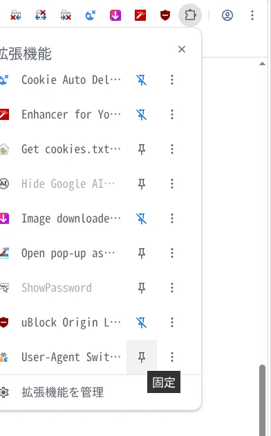
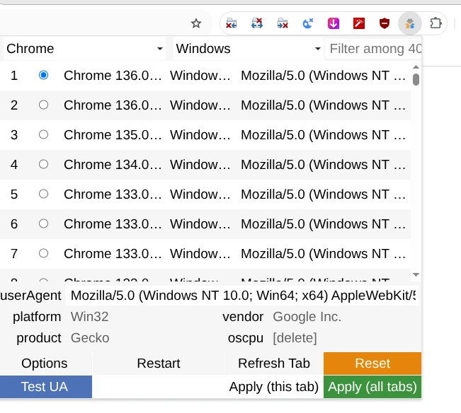
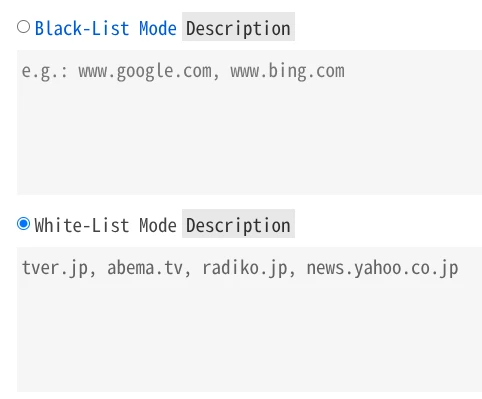
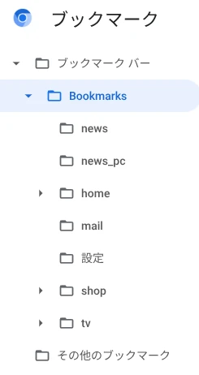

2025-10-04
chrome://settings/ を開く。文字を大きくするときは Ctrl を押したままマウスホイールを上に回す。小さくするときは Ctrl を押したままマウスホイールを下に回す。デフォルトに戻すときは「Ctrl+0」。
chrome://settings/appearance を開いて、「ブックマーク バーを表示する」をオンにする。
chrome://settings/importData を開いて、ブックマークをインポート。
chrome://settings/downloads を開いて、「保存先」をホームディレクトリにする。「ダウンロード前に各ファイルの保存場所を確認する」をオンにする。
chrome://settings/syncSetup を開いて、「検索候補の関連性を高める」をオフにする。
各ページを開いて「許可しない」を選択。
chrome://settings/content/camera
chrome://settings/content/microphone
chrome://settings/content/notifications
chrome://settings/languages を開いて「Google
翻訳を使用する」をオフにする。
この場合でもサイト内で右クリックすれば「日本語に翻訳」を選択できる。
chrome://settings/searchEngines を開いて「追加」をクリックし、次のように設定。
| 検索エンジン | キーワード | URL（%s=検索語句） |
|---|---|---|
| g | https://www.google.com/search?q=%s |
右横の「︙」をクリックして「デフォルトに設定」をクリック。
アドレスバーに「g(スペース)検索語句」と入力することで、Google
検索できるようになる。
Advanced Font Settings
Authenticator
Blank New Tab Page
Cache Cleaner
Clear Downloads
Close Left
Close Others
Close Right
Context Menu Search
Cookie Auto Delete
Enhancer for YouTube™
Get cookies.txt LOCALLY
Hide Google AI Overviews
Image downloader - Imageye
Open pop-up as tab
ShowPassword
uBlock Origin Lite
User-Agent Switcher and Manager
chrome://settings/searchEngines を開いて「追加」をクリックし、次のように設定する。
| 検索エンジン | キーワード | URL（%s=検索語句） |
|---|---|---|
| g | https://www.google.com/search?q=%s | |
| Google En | ge | https://www.google.co.jp/search?q=%s&hl=en&lr=lang_en |
| Amazon | a | https://www.amazon.co.jp/s?k=%s |
| ヨドバシ | yo | https://www.yodobashi.com/?word=%s |
| 楽天 | r | https://search.rakuten.co.jp/search/mall/%s |
| TVer | t | https://tver.jp/search/%s |
| YouTube | y | https://www.youtube.com/results?search_query=%s |
| X | x | https://nitter.net/search?f=tweets&q=%s&since=&until=&near= |
「User-Agent Switcher and Manager」をインストール。

右上の「拡張機能」をクリックし、「User-Agent Switcher」のアイコンをツールバーに固定。

「User-Agent Switcher」のアイコンをクリック。
設定メニューが出るので1番上の Chrome を選択。
「Apply (all tabs)」をクリック。

「User-Agent
Switcher」のアイコンを右クリックしてオプションを開く。
「White-List Mode」にチェックを入れ、次のサイトを追加。
tver.jp, abema.tv, radiko.jp, news.yahoo.co.jp画面1番下の「Save」を押す。
rsync -av \
--delete \
--delete-excluded \
--exclude=*cache \
--exclude=*Cache \
--exclude=Default/Service\ Worker \
--exclude=OnDeviceHeadSuggestModel \
--exclude=Safe\ Browsing \
--exclude=screen_ai \
$HOME/.config/chromium/* $HOME/chromium_bakバックアップから復元するときは次のように行う。
mv ~/.config/chromium ~/.config/chromium_bak
mv chromium_bak ~/.config/chromiumchrome://bookmarks/ を開いて Bookmarks フォルダを作り、そこにすべてのブックマークを入れる。

ブックマークバーがこのように表示される。